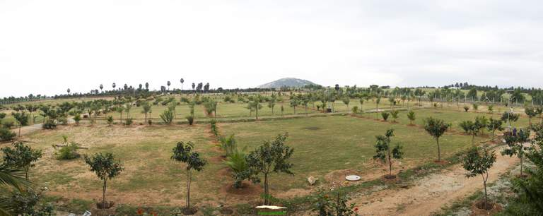

- Palm Meadows is a 17 acre orchard promoting a conducive environment for eco-friendly living.
- Located at the foothills of the Nilgiris mountain range, Palm Meadows enjoys the best of the being near Coimbatore as well as the Blue moutains surrounding it.
- As Coimbatore logically expands to the suburbs, Palm Meadows enjoys the proximity to numerous schools, colleges and reputed medical institutes in the vicinity.
